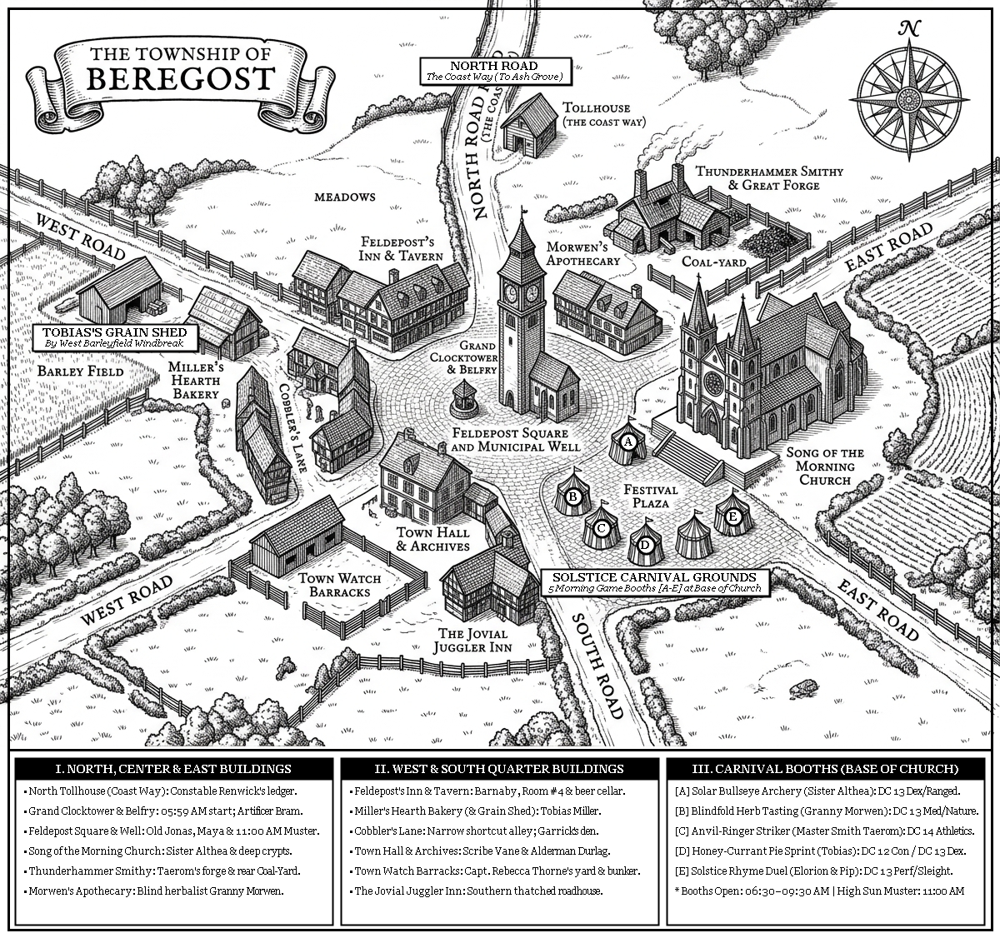

🗺️ Township of Beregost — Printable B&W Old-Timey Town Map
Includes all 12 labeled buildings and the 5 Solstice Carnival Booths ([A]–[E]) laid out at the base of the Song of the Morning Church.
✒️ 17th-Century Woodcut Engraving
📐 2D Overhead Street Schematic
🖨️ Print Map (B&W)
⬇️ Download PNG
